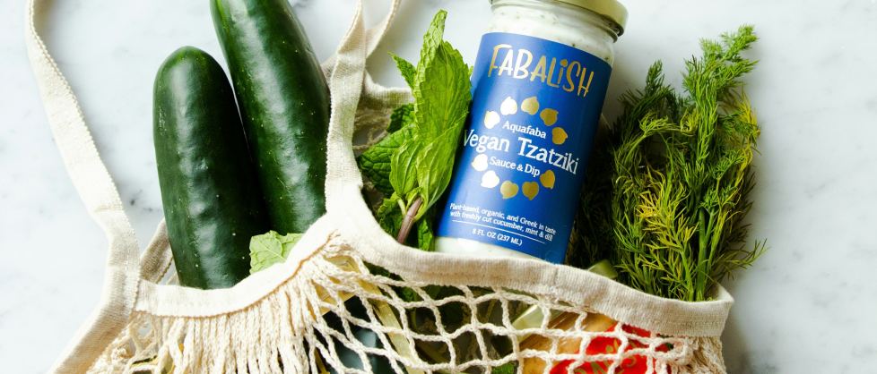
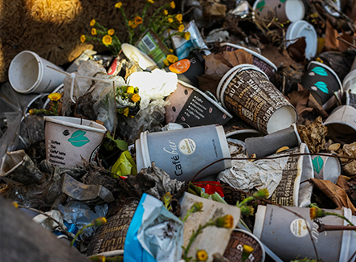
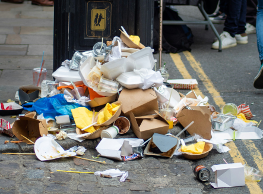

|  |
|---|
Il concetto di sostenibilità riguarda anche il cibo che portiamo in tavola:
una scelta più consapevole degli alimenti.
Non solo esistono alimenti sostenibili ma è possibile, con qualche
indicazione e un piccolo sforzo, ridurre l’impatto che l’alimentazione globale ha sulla Terra.
|  |  |
|---|
Per mangiare sostenibile e tutelare l’ambienta cosa occorre fare?
Molto semplicemente, seguire
le indicazioni fondamentali su cui si basa la dieta mediterranea:
 |
 |
|---|